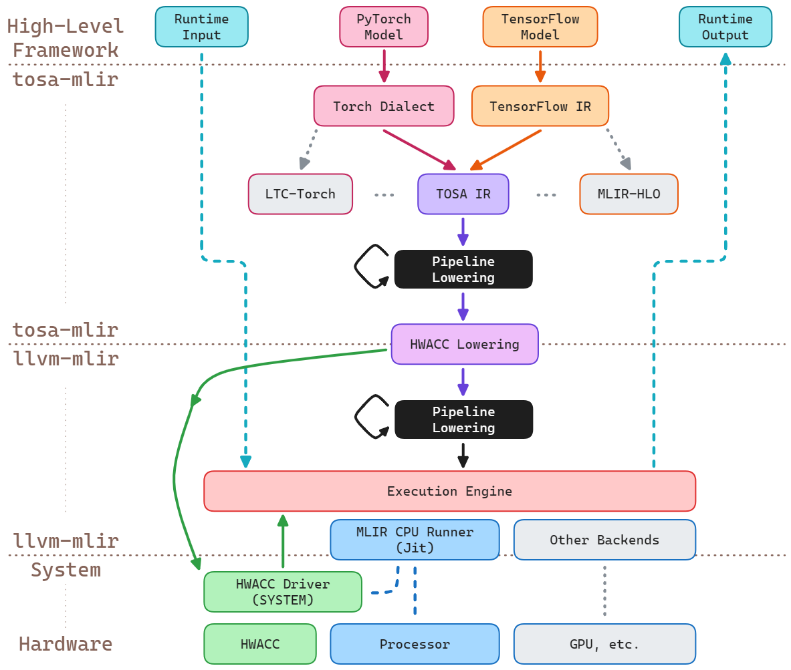
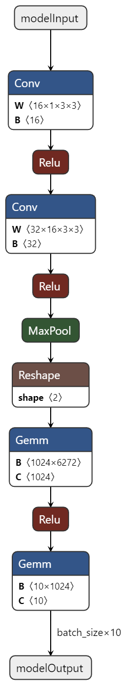
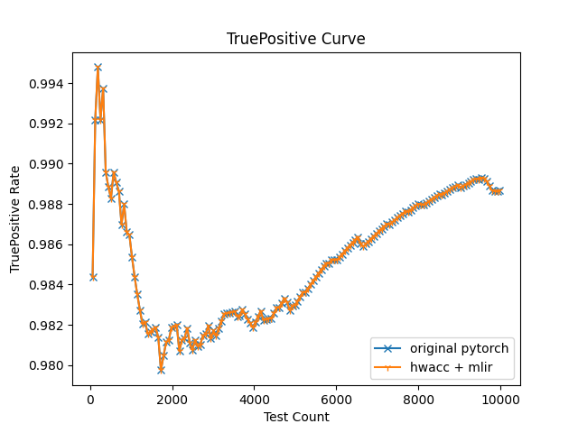

Project: Build non-intrusive Software Infrastructure of a GEMM HWACC using MLIR
Intro
This work presents the development of a software infrastructure for a Hardware GEMM Accelerator, utilizing MLIR to bridge the gap between high-level computational models and low-level hardware execution. The project implements a non-intrusive, robust framework. It seamlessly integrates with existing machine learning libraries, optimizing crucial matrix multiplication operations and enhancing model performance on custom hardware.
A New Golden Age for Computer Architecture
The rapid evolution of applications, such as machine learning, has significantly heightened the demand for high-quality computational power. As machine learning models continue to grow in complexity, and datasets increase in size, there is a sharp surge in the need for computational capabilities, energy efficiency, customization, and flexibility.
This surge has compelled hardware manufacturers to develop specialized accelerators, including GPUs (Graphics Processing Units), TPUs (Tensor Processing Units), and FPGAs (Field-Programmable Gate Arrays), designed to provide more efficient computational power. These heterogeneous hardware platforms excel at achieving higher energy efficiency by striking a balance between computational task allocation, energy consumption, and computational performance, consequently improving the power efficiency ratio. These platforms also excel in offering increased customization and flexibility to meet the diverse requirements of various applications.
In the realm of machine learning, different tasks often demand distinct computational resources. For instance, image-related deep learning applications frequently rely on parallel processing, while U-Net structure-based Transformer models, such as those used in large language models, may place more emphasis on the sequential processing capabilities of CPUs.
Moreover, with Moore’s Law nearing its limit, traditional hardware upgrades are no longer as effective in contributing to overall system performance speedup as they once were. In light of this, the significance of optimizing software implementation, the compilation process, and intermediate abstract layers becomes evident. Researchers and developers are actively exploring various approaches to application optimization, including Intermediate Representation (IR), Single Instruction Multiple Data (SIMD), and the eco-system of CUDA (Compute Unified Device Architecture).
Gap between Hardware and Software
However, it is important to note that while hardware capabilities have advanced significantly, software adaptation has not kept pace. Hardware manufacturers provide features, but software applications often need to be adapted to leverage these features, leading to increased development costs.
In the embedded systems domain, a usual approach for chip manufacturers is to provide their customized build-up toolchain. For instance, to embed neural network models on chipset, ST provides the STM32Cube.AI tool for its STM32 series, and Rockchip provides RKNN-SDK to support the integrated NPU. Both toolsets attached detailed documentations about how to migrate the code. In this case, software developers often need to invest considerable effort in adapting their applications to utilize these features efficiently. This adaptation process can be time-consuming and costly, highlighting the need for more seamless integration between hardware and software.
In response to these challenges, a growing trend is the adoption of unified heterogeneous development architectures. One such example is OpenACC, an open standard for parallel programming of heterogeneous systems, which aims to simplify the process of optimizing applications for different hardware accelerators.
MLIR and this work Approach
In this context, we propose a software and hardware co-design method, where optimization occurs at multiple layers, and a portion of computationally intensive instructions is migrated to hardware accelerators using Multi-Level Intermediate Representation (MLIR). MLIR presents an innovative approach to building reusable and extensible compiler infrastructure. Its goal is to reduce software fragmentation and enhance compilation for heterogeneous hardware, thereby significantly reducing the cost of developing domain-specific compilers and facilitating their integration with existing frameworks. This approach enables efficient utilization of hardware capabilities while reducing the burden of manual adaptation, ultimately enhancing development efficiency and lowering costs. Our aim is that the end users can easily adopt those machine learning models written in standard language and libraries, with the minimum effort to learn how to interact with our hardware.
The primary challenge addressed in this project is the efficient utilization of a Hardware GEMM Accelerator using a software infrastructure based on MLIR. The solution involves the implementation of a non-intrusive framework that integrates seamlessly with existing technologies, optimizing the performance of matrix multiplication operations crucial in many machine learning algorithms.
The integration of MLIR with GEMM Acceleration hardware brings several benefits:
- Enhanced performance optimization for machine learning models on customized hardware.
- Flexibility in representing, analyzing, and transforming graphs at multiple levels of abstraction, including Torch operations and hardware operations (torch-mlir).
- Facilitation of connections between hardware and high-level frameworks like PyTorch. The same approach may cater to various hardware configurations including TPUs and custom ASICs once the corresponding backend is added.
Detail Design

The system diagram illustrates the overall framework of this project.
To be clear, blocks with grey backgrounds are not supported or tested in this project. Grey dot lines illustrate the structure of the relative components but are not used in this work. The circled number located on each arrow represents the sequence of execution flow. Dash lines with numbers attached also represent the data flow.
We separate the toolchain into 4 layers, which are High-Level Framework, torch-mlir, llvm-mlir, and system with hardware.
High-Level Framework is the interface for end users, usually, in this project, this layer is programmed in Python with PyTorch library defining the model. Torch-mlir layer is based on torch-mlir project from the LLVM community. It contains the definition of torch dialect, the opt tool, and several backends. Backends defined the lowering sequence and the outcome from mlir layer. Their role is to instruct mlir layer to convert high-level model representation into code that can be executed on specific hardware. The llvm-mlir layer is based on the LLVM project. The pipelined lowering process utilizes a bunch of conversions from dialect to dialect to get the final result in progressive descent. At the bottom, the system and hardware layer is the actual component to execute all instructions.
For this project, we use the structure of LinalgOnTensor Backend. It focuses on converting linear algebra operations in MLIR into low-level code that can operate directly on tensors. This backend optimizes these operations so that they can be mapped more efficiently to accelerator hardware that supports linear algebra operations. During the progressive lowering sequence, we insert our passes to redirect the behavior of execution before a pattern we recognize is broken down into pieces that may be hard to identify.
Step-by-Step Design Explanation
Here’s how this system operates, following the execution flow shown in the system diagram:
- User defined a PyTorch model and passed it to torch-mlir library. The library compiles the torch model into mlir script in torch dialect by a pybinded torch-mlir-opt execution call. The user gets the handle to the mlir model.
- User chooses to use our customized
HwaccLinalgOnTensorBackend. The handle of the torch dialect model is passed into our backend implementation. HwaccLinalgOnTensorbackend lowers the torch dialect operations into other dialects that are officially supported by MLIR. Then the backend generates the sequence of optimizing and lowering towards LLVM IR for MLIR toolset.- Opt tool inside MLIR gets the pipeline sequence from the layer above and iteratively lowers the user script. During this step, our redirection of
linalg.matmulis applied. The matmul operation will turn into a C function call instead of nested loops of ALU instructions with loads and stores. - The final outcome after the pipeline lowering is recognizable for LLVM Jit. Therefore, the instructions are stored in the Execution Engine, with a C-typed function call style wrapped, waiting for a user call from the High-Level Framework.
- At this moment, the matmul operation is required but not implemented. Torch backend needs to get the executable function and register it to the Execution Engine.
- User starts the inference / training of the pytorch model. Causing the execution of CPU Runner Jit.
- When the LLVM IR script reaches its end, a return call is executed, which pushes the data descriptor to the upper levels of this system. The processed data rises step by step and becomes runtime output by a numpy library call which converts the descriptor into numpy.ndarray and return to the user. At this stage, the cycle from high-level model specification to low-level hardware execution is completed.
This workflow is designed to efficiently translate high-level machine learning models into optimized, executable code that can run on various hardware, including specialized accelerators.
Experimental Explore
Technical problem and solution
During the exploration of the existing MLIR and Torch-Mlir project, it is easy to get lost of function definition, especially for beginners. The fast-paced evolution of the project led to discrepancies between the provided documentation and the actual implementation. The inadequate and scattered documentation for MLIR and torch-mlir makes the understanding of code even harder. For most of the cases, the explanation of code and errors are documented in the MLIR discourse forum. Therefore, the learning curve is steep in the beginning.
Lack of systematic up-to-date documentation
One typical case is the Python package location documented inside development.md. The actual location of outcomes that the environment variable PYTHONPATH needs to store has been changed multiple times in recent history. Till the time of writing this report, the path issue is still not fixed.
Limited explanation about memref interoperability and solution
Another example of a problem I was facing is the C interpretation format of memref type in MLIR. Although memref dialect is relatively stable. Limited documentation for interaction outer the scope of MLIR. This problem stuck me for quite a long time, seeking where is the data located after the pointer I received.
It turns out that the array of data that the memref represents is not directly sent to the C interface. Instead, the memref object delivers a pointer to a descriptor structure that contains the information about the tensor. This was found by reading the numpy interfacing source code for return value handling. Based on the numpy library-defined name of the memref descriptor, I found the relative online discussion about the memref C interface.
By the way, it is worth noticing that the ranked memref object and the unranked one use totally different descriptor structures. Also, the descriptor size of memref objects is different based on rank. In my observation, the element type is not included in the descriptor, which makes it hard for the C library to handle all types of memref input in one function interface.
Luckily, we got the backend written in Python. This is the key to solving this problem. As the instructions are lowered to LLVM IR level, the func call name can be accessed by Python at this stage. I implemented a function name parser referencing how the numpy interface did. After extracting the call name with the input and output memref type, the Python code links the call to a type-matched C library symbol by the redirection ability of the function lookup table in Python.
Testbench
To test whether our HWACC-MLIR structure is executing correctly or not, we introduced a testbench. It is a MNIST handwritten digit classification task. The convolutional neural network is written as a class inherited from torch.nn.Module.
Its architecture is as follows:
- Input Layer: The network accepts a single-channel (grayscale) image of size 28x28 pixels.
- First Convolutional Layer: This layer expands the depth of the input from 1 channel to 16 channels using a 3x3 convolutional kernel with a stride of 1 and padding of 1. The output remains at 28x28 pixels.
- ReLU Activation: Following the first convolutional operation, a ReLU activation function is applied to introduce non-linearity, enabling the network to learn more complex patterns.
- Second Convolutional Layer: The second convolutional layer further increases the depth from 16 to 32 channels, with the same kernel size, stride, and padding as the first layer. The output size remains 28x28 pixels.
- ReLU Activation: A second ReLU activation function is applied after the second convolutional layer.
- Max Pooling Layer: This layer performs a 2x2 max pooling operation with a stride of 2, reducing the spatial dimensions from 28x28 to 14x14 pixels while retaining the 32 channels.
- Flatten Operation: Before entering the fully connected layers, the 32x14x14 tensor is flattened into a 1D tensor of 6272 elements (32 * 14 * 14).
- First Fully Connected (Dense) Layer: The flattened tensor is passed through a fully connected layer reducing its size to 1024 nodes.
- ReLU Activation: A ReLU activation is applied after the fully connected layer.
- Dropout: A dropout layer with a dropout rate of 30 percent is used to prevent overfitting during training.
- Second Fully Connected (Dense) Layer: The final fully connected layer reduces the size from 1024 nodes to 10 nodes, corresponding to the number of classes for classification.

Testing / Results
Env Setup
PyVenv and dependencies
Follow the official development instruction from torch-mlir.
To build the whole project in-tree with JIT modules enabled, add the following paramenters to CMake:
-DTORCH_MLIR_ENABLE_PYTORCH_EXTENSIONS=ON \
-DTORCH_MLIR_ENABLE_JIT_IR_IMPORTER=ON \Runtime Env activation
Additional command line variables are required to run the whole JIT toolchain:
#!/usr/bin/env bash
__TORCH_MLIR_PATH__=<PRJ_PATH>
conda activate <PRJ_CONDA_ENV>
export PYTHONPATH=$__TORCH_MLIR_PATH__/build/python_packages/torch_mlir:$__TORCH_MLIR_PATH__/projects/pt1/examples:$__TORCH_MLIR_PATH__/build/tools/torch-mlir/python_packages/torch_mlir
export TORCH_MLIR_PREFIX=$__TORCH_MLIR_PATH__/build/bin
export LD_LIBRARY_PATH=$LD_LIBRARY_PATH:$__TORCH_MLIR_PATH__/build/lib
echo "Use 'conda deactivate' to exit this venv"The reason for adding additional LD_LIBRARY_PATH is that we encapsulate our HWACC-GEMM func interface as a HAL lib call towards the JIT toolchain. Therefore, each time when the LLVM JIT runs into such a command of llvm.call @linalg_matmul_*() it needs to be remapped into some registered functions that are provided by the shared library. And we provided such func call in LD_LIBRARY_PATH, and operation binding in hwaccBackendLibCall.py.
Unit Test
Adding / Removing w/ MatchAndRewrite(MatmulOp)
A MatchAndRewrite(MatmulOp) pattern is added to the Hwacc Pass. In this pattern match test, operations that can be successfully cast into MatmulOp will be substituted by a CallOp as shown below:
LogicalResult matchAndRewrite(Operation *op, PatternRewriter &rewriter) const override {
SingletonLogger::getInstance() << "Test:[" << op->getName().getStringRef().str() << "]\t";
auto matmulOp = dyn_cast<MatmulOp>(op);
if (!isa<MatmulOp>(op) || !matmulOp.hasPureBufferSemantics()) {
SingletonLogger::getInstance() << "Fail To Match!" << "\n";
return rewriter.notifyMatchFailure(
op, "expected matmul op with buffer semantics");
}
SingletonLogger::getInstance() << "Capture! " << matmulOp->getName().getStringRef().str() << "\n";
...
}To replicate the capture process use the command line of:
<prj>/build/bin/mlir-opt -pass-pipeline='builtin.module(func.func(convert-linalg-to-hwacc))' ./my_torch_jit_app1.mlir_lowering_pipeline.before_linalg_matmul_lowering.mlir After the optimization process, the filter matches correctly to its rule. the following debug log is documented:
# debug.log
...
Test:[scf.for] Fail To Match!
Test:[memref.alloc] Fail To Match!
Test:[arith.addf] Fail To Match!
Test:[linalg.matmul] Capture! linalg.matmul
Test:[linalg.yield] Fail To Match!
...Adding / Removing -convert-linalg-to-hwacc pass
A new pass was added to linalg/passes.td called convert-linalg-to-hwacc. Its corresponding C implementation is createConvertLinalgToHwaccPass(). Complete the rest part of the implementation of this pass, rebuild, and test. Changing the pipeline lowering sequence in refbackend.py.
Before adding -convert-linalg-to-hwacc, the lowered mlir instructions until -refback-munge-memref-copy is shown in below. The linalg operation is not expanded.
...
alloc_15 = memref.alloc() {alignment = 64 : i64} : memref<64x1024xf32>
linalg.generic {indexing_maps = [#map2, #map2], iterator_types = ["parallel", "parallel"]} ins(alloc_14 : memref<64x1024xf32>) outs(alloc_15 : memref<64x1024xf32>) {
^bb0(in: f32, out: f32):
linalg.yield in : f32
}
memref.dealloc alloc_14 : memref<64x1024xf32>
// Not yet expanded, whole op showing as a matmul sementic.
linalg.matmul ins(collapse_shape, 1 : memref<64x6272xf32>, memref<6272x1024xf32>) outs(alloc_15 : memref<64x1024xf32>)
memref.dealloc alloc_13 : memref<64x32x14x14xf32>
alloc_16 = memref.alloc() {alignment = 64 : i64} : memref<64x1024xf32>
linalg.generic {indexing_maps = [#map2, #map3, #map2], iterator_types = ["parallel", "parallel"]} ins(alloc_15, 3 : memref<64x1024xf32>, memref<1024xf32>) outs(alloc_16 : memref<64x1024xf32>) {
^bb0(in: f32, in_21: f32, out: f32):
8 = arith.addf in, in_21 : f32
9 = arith.cmpf ugt, 8, cst_0 : f32
...The linalg operation is changed to scf.for loop. Remember the implementation of match and rewrite is referencing from Loops.cpp, this is the reason for observing such behavior here.
...
alloc_15 = memref.alloc() {alignment = 64 : i64} : memref<64x1024xf32>
linalg.generic {indexing_maps = [#map2, #map2], iterator_types = ["parallel", "parallel"]} ins(alloc_14 : memref<64x1024xf32>) outs(alloc_15 : memref<64x1024xf32>) {
^bb0(in: f32, out: f32):
linalg.yield in : f32
}
memref.dealloc alloc_14 : memref<64x1024xf32>
// Matmul expanded into scf.for loops.
scf.for arg1 = c0 to c64 step c1 {
scf.for arg2 = c0 to c1024 step c1 {
scf.for arg3 = c0 to c6272 step c1 {
8 = memref.load collapse_shape[arg1, arg3] : memref<64x6272xf32>
9 = memref.load 1[arg3, arg2] : memref<6272x1024xf32>
10 = memref.load alloc_15[arg1, arg2] : memref<64x1024xf32>
11 = arith.mulf 8, 9 : f32
12 = arith.addf 10, 11 : f32
memref.store 12, alloc_15[arg1, arg2] : memref<64x1024xf32>
}
}
}
memref.dealloc alloc_13 : memref<64x32x14x14xf32>
alloc_16 = memref.alloc() {alignment = 64 : i64} : memref<64x1024xf32>
linalg.generic {indexing_maps = [#map2, #map3, #map2], iterator_types = ["parallel", "parallel"]} ins(alloc_15, 3 : memref<64x1024xf32>, memref<1024xf32>) outs(alloc_16 : memref<64x1024xf32>) {
^bb0(in: f32, in_21: f32, out: f32):
8 = arith.addf in, in_21 : f32
9 = arith.cmpf ugt, 8, cst_0 : f32
...After adding our pass indicator to the lowering sequence, the lowered mlir instructions script is shown as the following.
...
%1479 = llvm.getelementptr %1457[%1478] : (!llvm.ptr, i64) -> !llvm.ptr, f32 loc(#loc21)
llvm.store %1475, %1479 : f32, !llvm.ptr loc(#loc21)
%1480 = llvm.add %1469, %5 : i64 loc(#loc21)
llvm.br ^bb255(%1480 : i64) loc(#loc21)
^bb257: // pred: ^bb255
%1481 = llvm.add %1467, %5 : i64 loc(#loc21)
llvm.br ^bb253(%1481 : i64) loc(#loc21)
^bb258: // pred: ^bb253
llvm.call @free(%1414) : (!llvm.ptr) -> () loc(#loc21)
// Kept as a C style func call, that can be preserved into HAL lib tiling optimization.
llvm.call @linalg_matmul_view64x1024xf32_view1024x10xf32_view64x10xf32(%1368, %1375, %1379, %1359, %1360, %1360, %1361, %29, %27, %33, %19, %20, %20, %21, %1450, %1457, %1461, %1441, %1442, %1442, %1443) : (!llvm.ptr, !llvm.ptr, i64, i64, i64, i64, i64, !llvm.ptr, !llvm.ptr, i64, i64, i64, i64, i64, !llvm.ptr, !llvm.ptr, i64, i64, i64, i64, i64) -> () loc(#loc21)
llvm.call @free(%1368) : (!llvm.ptr) -> () loc(#loc25)
%1482 = llvm.mlir.constant(64 : index) : i64 loc(#loc21)
%1483 = llvm.mlir.constant(10 : index) : i64 loc(#loc21)
%1484 = llvm.mlir.constant(1 : index) : i64 loc(#loc21)
%1485 = llvm.mlir.constant(640 : index) : i64 loc(#loc21)
%1486 = llvm.mlir.zero : !llvm.ptr loc(#loc21)
%1487 = llvm.getelementptr %1486[640] : (!llvm.ptr) -> !llvm.ptr, f32 loc(#loc21)
%1488 = llvm.ptrtoint %1487 : !llvm.ptr to i64 loc(#loc21)
%1489 = llvm.mlir.constant(64 : index) : i64 loc(#loc21)
...System Test
After activating the customed Python virtual environment. Import the MNIST Handwritten Digit Testbench from the previous section. Attach the Torch-Milr backend with our HWACC pass integrated into the PyTorch model. The demo code showing in below is the basic outline of the test application.
# ...
import torch_mlir
from torch_mlir_e2e_test.hwacc_linalg_on_tensors_backends import refbackend
# ...
my_nn_in_torch_mlir = torch_mlir.compile(my_model, torch.ones(64, 1, 28, 28), output_type="Linalg-on-Tensors")
hwacc_backend = refbackend.RefBackendHwaccLinalgOnTensorsBackend()
my_nn_llvm_ir = hwacc_backend.compile(my_nn_in_torch_mlir)
exec_jit_handle = hwacc_backend.load(my_nn_llvm_ir)
# Run inference
print("PyTorch Native: ")
for img, label in test_data_loader:
img, label = Variable(img), Variable(label)
outputs = my_model(img)
_, pred = torch.max(outputs.data, 1)
test_count+=img.size()[0]
test_correct += torch.sum(pred == label.data)
print(" Test Correct {:4d}/{:4d} --> {:.4f}".format(
test_correct, test_count, 100.0*test_correct/test_count))
if MAX_TEST_COUNT <= test_count: break
print("Test Accuracy is:{:.4f}".format( 100 * test_correct / test_count ))
print("torch-mlir: ")
for img, label in test_data_loader:
img, label = Variable(img), Variable(label)
outputs = exec_jit_handle.forward(img.numpy())
outputs = torch.from_numpy(outputs)
_, pred = torch.max(outputs.data, 1)
test_count+=img.size()[0]
test_correct += torch.sum(pred == label.data)
print(" Test Correct {:4d}/{:4d} --> {:.4f}".format(
test_correct, test_count, 100.0*test_correct/test_count))
if MAX_TEST_COUNT <= test_count: break
print("Test Accuracy is:{:.4f}".format( 100 * test_correct / test_count ))Data Accuracy
After execution, the accuracy of result overtime from both implementations are shown in below. There’s no difference between the pure pytorch backend, and our implementation. Which means our method of remapping such matmul function to HWACC HAL lib call is success in simulation.

Timing
We are curious about how the performances are between different configurations. After testing each configuration 20 times, we averaged the timing result and summarized the timing result as listed in following.
| Class | Exec Item | Item Time (sec) | Required (orig_pytorch) | Required (mlir_hwacc) | Required (mlir_cfloop) |
|---|---|---|---|---|---|
| Init | pytorch nn model loading | 1.7 | \(\checkmark\) | \(\checkmark\) | \(\checkmark\) |
| Init | torch_mlir compile+load | 0.8 | \(\checkmark\) | \(\checkmark\) | |
| Inference | original pytorch calc (orig) | 1.7 | \(\checkmark\) | ||
| Inference | mlir using hwacc (hwacc) | 6.4 | \(\checkmark\) | ||
| Inference | mlir using scf.loop (loop) | 29.5 | \(\checkmark\) | ||
| Total | Time Cost | 3.4 | 8.9 | 32 |
As we observed in this table, the original pytorch calculation is the fastest, then our implementation using HWACC, and the official torch-mlir solution is the slowest. It is not surprising that the original pytorch implementation reaches the best score since it utilizes the BLAS library to do the calculations, and BLAS will try to adapt all kinds of localized accelerating methods such as multicore parallel, loop unrolling, SIMD instructions, e.g. AVX on X86 or NEON on ARM machine.
An exciting finding is that our HWACC implementation is about 4.6 times faster than the loop solution based on Amdahl’s Law.
Conclusion
Summary
The project successfully demonstrates the integration of a Hardware GEMM Accelerator with an MLIR-based software infrastructure, showing significant improvements in computational efficiency. Despite challenges such as inconsistent documentation and evolving MLIR implementations, the project culminates in a versatile system capable of translating high-level neural network models into optimized code for diverse hardware architectures. This infrastructure promises to simplify the adoption of machine learning models, reducing the effort required to achieve efficient hardware acceleration.
Future outlook
In the future, the project aims to expand the capabilities of the MLIR-based software infrastructure for Hardware GEMM Accelerators. We envision enhancing support for a wider range of machine learning models and computational patterns, thus fostering broader adoption across various domains. Also, our approach is now limited to C-interfaced call mapping, we hope to find a better and more elegant way to interact with our hardware implementation.
Code Repo
Code are distributed in different sections. To get the starting point, check out the Torch-MLIR repo, this is the root repo that has submodules as link to other two repos used below.
- Torch-MLIR toolchain:
https://github.com/jiangquchengpeter/torch-mlir-hwacc - HWACC HAL Shared Lib:
https://github.com/jiangquchengpeter/gemm-hwacc-backend - LLVM with HWACC pass:
https://github.com/jiangquchengpeter/llvm-project-hwacc